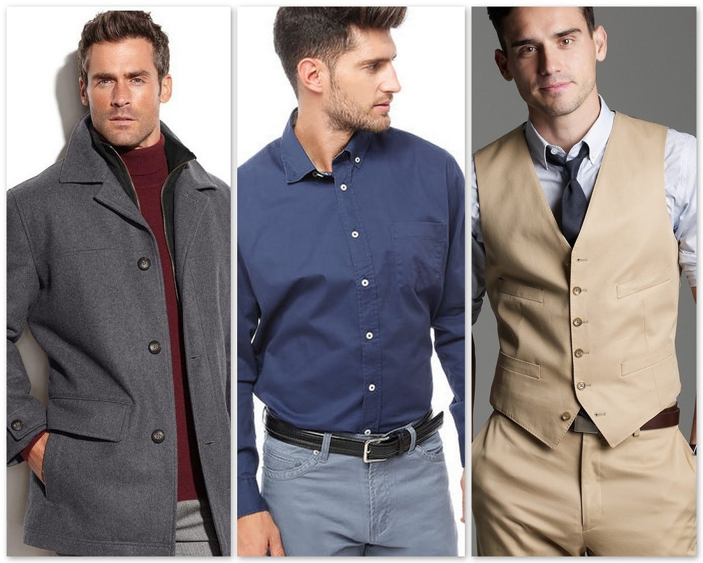

Las mejores chaquetas con estilo
Por: Barbara Martel Fecha: Viernes 20 de diciembre
En este invierno prepárate para las mejores chaquetas creadas especialmente para ti y hechas pensando en ti.
Leer más... ComentariosPor: Barbara Martel Fecha: Viernes 20 de diciembre
En este invierno prepárate para las mejores chaquetas creadas especialmente para ti y hechas pensando en ti.
Leer más... ComentariosPor: Barbara Martel> Fecha: Viernes 20 de diciembre
En esta sección de ropa online de "LOGO" vas a encontrar contenido de moda de nuestro país donde podemos encontrar prendas de nuestra colección de moda joven.
Leer más ... ComentariosPor: Barbara Martel> Fecha: Viernes 20 de diciembre
Las tiendas de ropa online han vivido un boom sin precendetes en estos ultimos 365 días. Si bien el e-commerce ya estaba empezando a posicionarse como nuestra modalidad de compra predilecta con unos porcentajes que demuestran que lo digital es el futuro, lo que entonces era una opción pasó a ser una necesidad. No hace falta que te expliquemos el porqué, ¿verdad?
Leer más... ComentariosPor: Barbara Martel Fecha: Martes 24 de Diciembre
¿Eres de los que le encanta ir a la moda y está atento a las últimas tendencias? ¿Eres de los que te gusta aportar estilo y personalidad a tus looks? ¡Estás en el sitio correcto! Si hablamos del mundo de la moda, seguramente estarás visualizando numerosos rostros femeninos en tu mente.
Leer más... ComentariosPor: Barbara Martel Fecha: Martes 24 de Diciembre
El mundo ha evolucionado y la forma de comprar y vender también. Actualmente, podemos encontrar miles de proveedores de ropa sin necesitar movernos de casa. Con la computadora o el Smartphone, tenemos acceso a una enorme variedad de prendas, calzados y accesorios. Y lo mejor es que podemos disfrutar de descuentos exclusivos…
Leer más... ComentariosAnteriores publicaciones
• Siguientes publicaciones